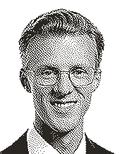

Johannes Skifter
Hi, I'm Johannes. I grew up in a small Danish countryside village in Jutland, studied business, analytics and ML in Copenhagen and moved to Lausanne for a master's on climate change, economics and finance - partly because of the mountains :).
I like figuring out how things work: a graphics card, car engine, a power grid, the route LNG takes to reach Europe. These days that mostly means writing code with LLMs and poking at data. I'm learning a lot of it as I go, and this page is just a simple record of what I've been up to.
(On paper my first name is Jacob; long story from a multilingual household. Everyone calls me Johannes.)
Now
- Building small data projects on European power markets and global energy and food trade.
- Honestly, I'm in what Noah Smith calls a bumbitious phase. I'm not chasing a fixed goal so much as looking for work that's genuinely interesting or worthwhile. I still catch my ego wanting the feeling of success, and I try not to let it steer.
- Where I feel pulled, for now: computing close to the hardware, recycling and upcycling, and maybe forestry and the wood industry. Still exploring.
- Looking for my next role, ideally with [technical] people I can learn a lot from.
Projects
- trade-flows
- A globe of oil and LNG shipping routes and what disrupts them. Updates weekly.
- eu-grid
- Live European power mix, prices and cross-border flows, from ENTSO-E data.
- thesis
- My master's thesis: a way to compare GPU compute business models that an LLM-in-the-loop protocol can help keep up to date. Graded 6/6.
- gpu-notes
- Notes I've collected on GPU supply chains, data centres and their energy needs.
- job-agent (private)
- A helper that reads job postings and drafts a CV and cover letter for me to edit based on my canoncial data.
More on GitHub.
Work and study
- 2026
- Impossible Cloud, Zug. Chief of Staff, Strategy and GenAI. Helped get a GPU brokering business going, wrote a first version of a demand-supply matching tool, and built internal AI tools with the team.
- 2024–26
- MSc in Sustainable Management and Technology at EPFL, IMD and HEC Lausanne. GPA 5.75/6.
- 2023–24
- FIH Partners, Copenhagen. M&A analyst. Learned a lot from a very good team. Seeing ChatGPT turn up in every deliverable (and a long-time intuition and passion for computers) is what pulled me towards tech.
- 2020–23
- BSc in Business Administration and Digital Management at CBS, with a semester at Wharton (shoutout to everyone at Sansom Place West, where I lived). On the side, marketing for Orbitvu Nordic with two other students.
- 2016–19
- High school in Denmark, on an international business programme: a class of 20, taught in English, built around international trade and learning to understand and respect other cultures. Exchanges to Fudan University in Shanghai, the University of Washington in Seattle, and the UK. GPA 11.2/12.
- earlier
- Washing dishes, importing stickers, a tiny web agency that didn't work out, and fixing and reselling electronics since I was fifteen. I still do that last one.
The longer version is in my CV.
Trips and adventures
- age 15
- Two weeks at the Wudang Daoist Traditional Kung Fu Academy in the Wudang mountains in China, with 15 of us from my boarding school, Ranum Efterskole. We trained, performed in the temple and sang Danish songs at the farewell evening. The academy wrote about our visit.
- age 18
- A month interrailing alone through central and eastern Europe.
- age 19
- Backpacking around Southeast Asia. Pretty standard, I know, but I fell for the food, the kindness of the people and the board game cafés in Bangkok.
- age 19
- Farmhand at Tamalie Farms near Tamworth in New South Wales: cattle, fencing, some welding, my own old truck and a lot of silence. COVID called me home in March 2020, sooner than I'd planned.
Books I keep coming back to
- The Selfish Gene, Richard Dawkins
- The Changing World Order, Ray Dalio
- Creativity, Inc., Ed Catmull
- The World for Sale, Javier Blas and Jack Farchy
Also good: Chip War, Born to Run, The Silk Roads and Harari's books. And two I like side by side: Money and Power, on Goldman Sachs, and The Beauty of Everyday Things. It helps to understand how the world works, downsides included.
And I'm a big Harry Potter fan.
Away from the keyboard
- The mountains, mostly. Hiking from hut to hut, ski touring in winter, and trail running when I want hills (though I sometimes find that I forget to stop and enjoy the scenery).
- Running and road cycling closer to home to clear my head and explore.
- Building computers, and cleaning up old ones until they look new again.
- Learning languages. I grew up with English, Danish and German and I'm working on French. It's my favourite way to get to know a culture and the people in it.
- Travelling to new places and meeting the people who live there. The world needs more cultural empathy and I do my best to promote it.
- Sauna, especially a good saunagus. I've just started felting my own sauna hat :D.
- Board games. Catan with all the expansions is my favourite, then Pandemic.
- Gaming too. World of Warcraft is my guilty pleasure.
- Qi gong, which is the slow, quiet one.
Get in touch
Happy to chat about energy, compute, life philosophies, building things with AI, or anything else. The easiest way to reach me is LinkedIn.